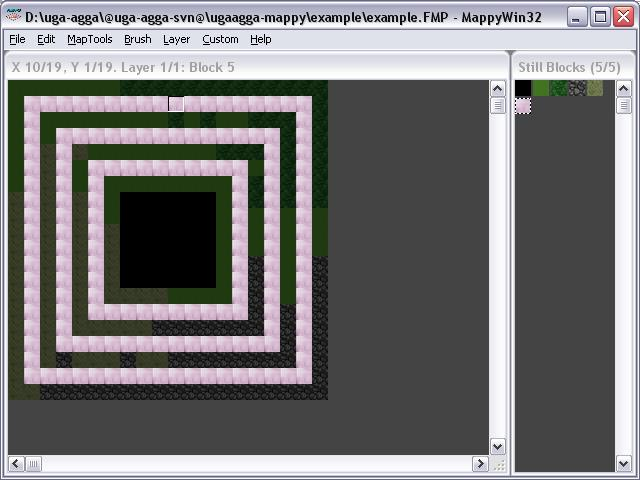

Für die Erstellung muss MappyWin32 sowie ein Plugin für Mappy installiert werden.
MappyWin32 kann auf http://www.tilemap.co.uk/mappy.php heruntergeladen werden. Zum Zeitpunkt des Schreibens dieser Anleitung war die Version V1.4.10 aktuell.
Nach dem Download muss MappyWin32 in einem Verzeichnis nach Wahl entpackt werden.
Danach muss das mitgelieferte Plugin 'UAExporter.lua' in das Mappy Verzeichnis unter 'luascr' kopiert werden. Dort liegen bereits einige andere Plugins (erkenntbar an der Endung .lua).
Nun muss das Plugin per Hand aktiviert werden. Mappy stellt dafür keine grafische Oberfläche zur Verfügung. Die Datei mapwin.ini muss in einem Texteditor geöffnet werden. Dort sucht man nach den Zeilen:
lua01= usw. lua02= usw. ...
In diesen Zeilen werden die Plugins für Mappy angegeben. Da Mappy aber nur maximal 16 Plugins gleichzeitig nutzen kann, dürfen die Nummern nur von 01 bis 16 laufen.
Man sucht also nach einem freien Platz für das Plugin. In Version V1.4.10 war der 16. Platz nicht belegt. Nun kann man also einfügen:
lua16=UAExporter.lua
Gegebenenfalls muss dort also die Nummer gegen eine passende ausgetauscht werden.
Nach dem Start von mapwin.exe kann nun mit "File > New Map" eine neue Karte erstellt werden. In dem erscheinenden Dialog kann nun angegeben werden, wie groß die Karte werden soll und wie groß die Grafik einer einzelnen Zelle sein soll.
Nutzt man die mitgelieferten Grafiken für die Zellen, setzt man dazu die Breite und Höhe der Grafiken (tile width & height) auf jeweils 16. Die Kartendimension (map width & height) kann beliebig gewählt werden.
Nach der Bestätigung dieser Vorgaben erscheint ein weiterer Dialog, der darauf hinweist, dass man nun Bilder für die einzelnen Zellen importieren solle.
Nach der Erstellung der neuen Karte sollte das ungefähr so aussehen:
Über "File > Import" kann nun also die mitgelieferte Datei "ua-terrain.bmp" als Zellgrafiken importiert werden. Obwohl es sich nur um eine einzelne Grafik handelt, spaltet Mappy diese nun in 5 Zellen auf, welche dann im rechten Fenster angezeigt werden sollten.
Nun kann es also mit dem Füllen der Karte losgehen. Um eine Zelle zu setzen, wählt man aus dem rechten Fenster eine Grafik aus und kann diese dann per Linksklick auf der Karte auftragen. Um eine Zelle wieder zu leeren, klickt man einmal rechts.
Man füllt die Karte nun, bis man der Meinung ist, dass dies das gewünschte Terrain ist. Das sieht dann zum Beispiel so aus:
Nachdem die Karte nun wie gewünscht gefüllt wurde, muss nun noch ein zweites Layer hinzugefügt werden. In diesem sind die späteren Starthöhlen markiert, d.h. diejenigen Höhlen, die an neue Spieler vergeben werden sollen.
Eine gesetzte Zelle im zweiten Layer bedeutet dabei, dass die darunterliegende Höhle eine Starthöhle sein soll. Welches Terrain man dabei zum auftragen verwendet ist egal.
Ein neues Layer kann über "Layer > Add Layer" hinzugefügt werden. Sobald dies geschehen ist, wird auch direkt zum zweiten Layer umgeschaltet, so dass man das gerade editierte erste Layer nicht mehr sieht. Man kann aber über das "Layer"-Menü zwischen den einzelnen Layern umschalten.
Um eine bessere Übersicht beim Markieren der Starthöhlen zu haben, schaltet man das "Onion Skinning" über: "Layer > Onion Skin..." ein, indem man das "Enable" Häkchen setzt. Außerdem schaltet man zusätzlich die Option "Layer > Background Layers darkened" hinzu, so dass man das erste Layer nur noch schwach sieht.
Nun wählt man eine beliebige Grafik und kann nun in dem zweiten Layer nach Belieben Zellen setzen. Jede so gesetzte Zelle markiert die darunterliegende Zelle als Starthöhle.
Hinterher kann das zum Beispiel so aussehen:
Seit Uga-Agga Runde 7 gibt es Regionen. Diese können mit Mappy folgendermaßen erstellt werden. Jede Höhle gehört zu genau einer Region. Für Regionen brauchen wir ein weiteres Layer. Onion Skinning bietet sich hier auch an.
Nun kann man dort nach Belieben mit den Grafiken herummalen, wobei die Nummer der Grafik die Nummer der Region bestimmt. Also der erste Geländetyp in der Auswahl liefert am Ende auch Region 1. Dies ist wichtig, da Regionen im Spiel der Reihe nach freigeschaltet werden, daher sollte die Reihenfolge stimmen.
Bemerkung: Diese Regionsebene muß existieren, sonst weigert sich das Export-Plugin. Braucht man keine Regionen, so läßt man diese Ebene einfach komplett leer, es werden dann auch keine angelegt.
Nachdem die Karte inklusive Starthöhlenmarkierung und Regionen fertig gestellt ist, kann sie nun für Uga-Agga exportiert werden. Dazu betätigt man den Menüpunkt "Custom > UAExporter" und wählt dort dann einen Ort für die Export-Datei.
Danach muss man noch angeben, welche Koordinaten die linke obere Ecke der Mappy-Karte später im Spiel haben soll. Wenn also später im Spiel die linke obere Höhle die Koordinate (100|100) haben soll, trägt man "100,100" ein.
Die dadurch erstellte Datei enthält SQL-Statements, die die Höhlen und Regionen in der Datenbank erstellen.
Die erstellte Datei kann nun direkt in der Spieldatenbank eingefügt werden. Wie man SQL-Statements ausführt, soll an dieser Stelle nicht erläutert werden.